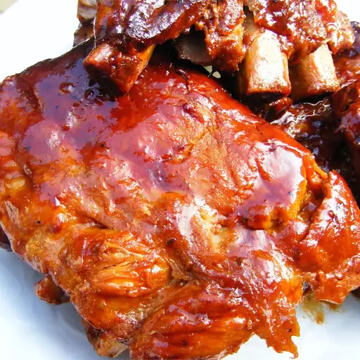

Slow-Cooker Barbecue Ribs

Description
Slow-cooker barbecue ribs are smoky meat rubbed with flavorful seasonings and cooked until it has a crisp bark or falls off the bone. Barbecue staples like spareribs and baby back ribs are pork cuts, while soothing comfort cuts like short ribs come from beef.
Ingredients
- 4 pounds pork baby back ribs
- Salt and pepper to taste
- 2 cups ketchup
- 1 cup chili sauce
- 1/2 cup packed brown sugar
- 4 tablespoons vinegar
- 2 teaspoons dried oregano
- 2 teaspoons Worcestershire sauce
- 1 dash hot sauce
Steps
- Preheat oven to 400 degrees F (200 degrees C).
- Season ribs with salt and pepper. Place in a shallow baking pan. Brown in oven 15 minutes. Turn over, and brown another 15 minutes; drain fat.
- In a medium bowl, mix together the ketchup, chili sauce, brown sugar, vinegar, oregano, Worcestershire sauce, hot sauce, and salt and pepper. Place ribs in slow cooker. Pour sauce over ribs, and turn to coat.
- Cover, and cook on Low 6 to 8 hours, or until ribs are tender.